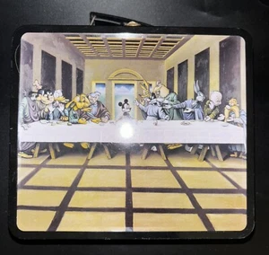

Literature
Ron English, Popaganda: The Art & Subversion of Ron English (San Francisco: Last Gasp, 2001), p. 96. ISBN 1-887128-60-3.
Ron English, Original Grin: The Art of Ron English (Paris: Cernunnos, 2019), p. 256. ISBN 978-2374950938.
Notes
Also circulated under the title Last Supper in Disneyland.
This work references Leonardo da Vinci’s The Last Supper.
The composition incorporates characters associated with Disney and Warner Bros. / Looney Tunes.
This image was later used on a 1999 WFMU 91.1 NJ Ron English metal lunchbox.
Ancillary Documentation
The following materials document grouped Disney and Warner Bros. / Looney Tunes character references, as well as related object documentation associated with the work.



Selected Online Circulation
Selected examples of the work’s online circulation, reproduction, or discussion. This list is not exhaustive; it is intended to document representative appearances of the image beyond formal exhibition and publication records.